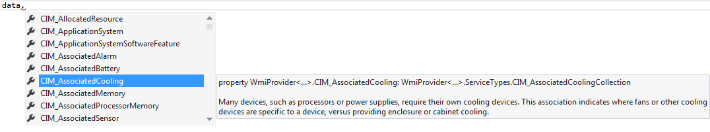

The WMI type provider
This tutorial shows the use of the Windows Management Instrumentation (WMI) type provider.
1: 2: 3: 4: 5: 6: 7: 8: 9: |
// reference the type provider dll #r "System.Management.dll" #r "FSharp.Management.WMI.dll" open FSharp.Management // Let the type provider infer the local machine type Local = WmiProvider<"localhost"> let data = Local.GetDataContext() |

1: 2: 3: 4: 5: 6: 7: 8: 9: 10: 11: 12: 13: 14: |
// Add a handler to watch WMI queries getting executed (optional) data.QueryExecuted.Add(printfn "Query executed: %s") // list all local drives [for d in data.Win32_DiskDrive -> d.Name, d.Description] Query executed: select * from Win32_DiskDrive val it : (string * string) list = [("\\.\PHYSICALDRIVE0", "Laufwerk"); ("\\.\PHYSICALDRIVE1", "Laufwerk") // Access some WMI data from the data connection [for d in data.CIM_DiskDrive -> [for c in d.Capabilities -> c.Is_SMART_Notification]] Query executed: select * from CIM_DiskDrive val it : bool list list = [[false; false]; [false; false]] |
namespace FSharp
namespace FSharp.Management
type Local = WmiProvider<...>
Full name: WMIProvider.Local
Full name: WMIProvider.Local
type WmiProvider
Full name: FSharp.Management.WmiProvider
<summary>Accesses management information using the schema of the indicated machine. Use 'localhost' for the local machine.</summary>
<param name='MachineName'>The name of the remote machine to connect to. Use 'localhost' for the local machine.</param>
<param name='Namespace'>The root WMI namespace (e.g. root\cimv2)</param>
<param name='Locale'>The used language for WMI (default is 'MS_409' which is en-US)</param>
Full name: FSharp.Management.WmiProvider
<summary>Accesses management information using the schema of the indicated machine. Use 'localhost' for the local machine.</summary>
<param name='MachineName'>The name of the remote machine to connect to. Use 'localhost' for the local machine.</param>
<param name='Namespace'>The root WMI namespace (e.g. root\cimv2)</param>
<param name='Locale'>The used language for WMI (default is 'MS_409' which is en-US)</param>
val data : WmiProvider<...>
Full name: WMIProvider.data
Full name: WMIProvider.data
WmiProvider<...>.GetDataContext() : WmiProvider<...>
WmiProvider<...>.GetDataContext(machineName: string) : WmiProvider<...>
WmiProvider<...>.GetDataContext(machineName: string) : WmiProvider<...>
event Runtime.DataContext.QueryExecuted: IEvent<Handler<string>,string>
member System.IObservable.Add : callback:('T -> unit) -> unit
val printfn : format:Printf.TextWriterFormat<'T> -> 'T
Full name: Microsoft.FSharp.Core.ExtraTopLevelOperators.printfn
Full name: Microsoft.FSharp.Core.ExtraTopLevelOperators.printfn
val d : WmiProvider<...>.ServiceTypes.Win32_DiskDrive
property WmiProvider<...>.Win32_DiskDrive: WmiProvider<...>.ServiceTypes.Win32_DiskDriveCollection
The Win32_DiskDrive class represents a physical disk drive as seen by a computer running the Win32 operating system. Any interface to a Win32 physical disk drive is a descendent (or member) of this class. The features of the disk drive seen through this object correspond to the logical and management characteristics of the drive. In some cases, this may not reflect the actual physical characteristics of the device. Any object based on another logical device would not be a member of this class.
Example: IDE Fixed Disk.
The Win32_DiskDrive class represents a physical disk drive as seen by a computer running the Win32 operating system. Any interface to a Win32 physical disk drive is a descendent (or member) of this class. The features of the disk drive seen through this object correspond to the logical and management characteristics of the drive. In some cases, this may not reflect the actual physical characteristics of the device. Any object based on another logical device would not be a member of this class.
Example: IDE Fixed Disk.
property WmiProvider<...>.ServiceTypes.CIM_ManagedSystemElement.Name: string
The Name property defines the label by which the object is known. When subclassed, the Name property can be overridden to be a Key property.
The Name property defines the label by which the object is known. When subclassed, the Name property can be overridden to be a Key property.
property WmiProvider<...>.ServiceTypes.CIM_ManagedSystemElement.Description: string
The Description property provides a textual description of the object.
The Description property provides a textual description of the object.
val d : WmiProvider<...>.ServiceTypes.CIM_DiskDrive
property WmiProvider<...>.CIM_DiskDrive: WmiProvider<...>.ServiceTypes.CIM_DiskDriveCollection
The CIM_DiskDrive class represents a physical disk drive as seen by the operating system. The features of the drive seen through this object correspond to the logical and management characteristics of the drive and, in some cases may not reflect the actual physical characteristics of the device. Any interface to a physical drive is a member of this class. Any object based on another logical device would not be a member of this class.
Example: IDE Fixed Disk.
The CIM_DiskDrive class represents a physical disk drive as seen by the operating system. The features of the drive seen through this object correspond to the logical and management characteristics of the drive and, in some cases may not reflect the actual physical characteristics of the device. Any interface to a physical drive is a member of this class. Any object based on another logical device would not be a member of this class.
Example: IDE Fixed Disk.
val c : WmiProvider<...>.ServiceTypes.CIM_MediaAccessDevice.CapabilitiesValues
property WmiProvider<...>.ServiceTypes.CIM_MediaAccessDevice.Capabilities: WmiProvider<...>.ServiceTypes.CIM_MediaAccessDevice.CapabilitiesValues []
Capabilities of the media access device. For example, the device may support "Random Access", removable media and "Automatic Cleaning". In this case, the values 3, 7 and 9 would be written to the array.
Several of the enumerated values require some explanation: 1) Value 11, Supports Dual Sided Media, distinguishes a Device that can access both sides of dual sided Media, from a Device that reads only a single side and requires the Media to be flipped; and, 2) Value 12, Predismount Eject Not Required, indicates that Media does not have to be explicitly ejected from the Device before being accessed by a PickerElement.
Capabilities of the media access device. For example, the device may support "Random Access", removable media and "Automatic Cleaning". In this case, the values 3, 7 and 9 would be written to the array.
Several of the enumerated values require some explanation: 1) Value 11, Supports Dual Sided Media, distinguishes a Device that can access both sides of dual sided Media, from a Device that reads only a single side and requires the Media to be flipped; and, 2) Value 12, Predismount Eject Not Required, indicates that Media does not have to be explicitly ejected from the Device before being accessed by a PickerElement.
property WmiProvider<...>.ServiceTypes.CIM_MediaAccessDevice.CapabilitiesValues.Is_SMART_Notification: bool
Check if the property 'Capabilities' of class 'CIM_MediaAccessDevice' is value 'SMART Notification', of underlying value '10'
Check if the property 'Capabilities' of class 'CIM_MediaAccessDevice' is value 'SMART Notification', of underlying value '10'